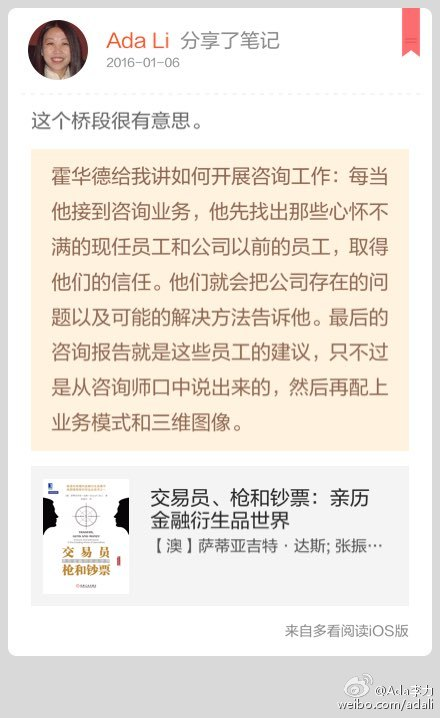

这个桥段很有意思。//#多看笔记# “霍华德给我讲如何开展咨询工作：每当他接到咨询业务，他先找出那些心怀不满的现任员工和公司以前的员工，取得他们的信任。他们就会把公司存在的问题以及可能的…” 摘自《交易员、枪和钞票：亲历金融衍生品世界》 @多看阅读 网页链接 
回复@KissDev:要解决户口的应该在校招上完成。这剩下乱投简历的，估计竞争力也不高。 //@KissDev:应届都要户口 来也白来@Ada李力:连接遇到两个应届毕业生，电话约了面试，到点儿没有出现，也没有任何回复信息。再推荐过来的简历，看到应届毕业生，直接点“不合适”。
回复@陶建辉快乐妈咪:大学扩招造成了这么一个结果 - 公司在招聘大学毕业生环节上的筛选成本增高。优秀人才在人群中的比例一直是很稳定的，现在得大学生也有非常出色的。 //@陶建辉快乐妈咪:有一半来就不错了，真不知现在的大学生是咋回事@Ada李力:连接遇到两个应届毕业生，电话约了面试，到点儿没有出现，也没有任何回复信息。再推荐过来的简历，看到应届毕业生，直接点“不合适”。